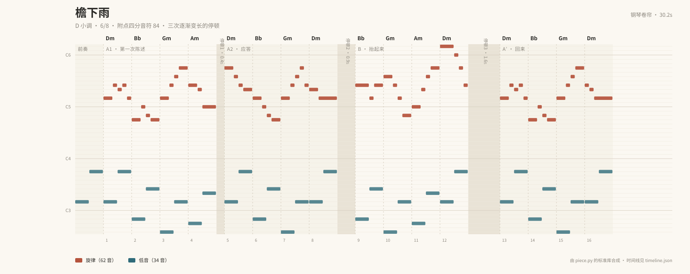
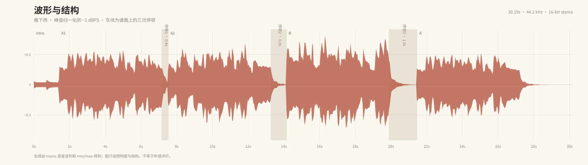

檐下雨
D 小调 · 6/8 · 附点四分音符 84 · 三次逐渐变长的停顿
本地文件 · 30.2 秒 · 无外部素材、无联网、无账号动作
结构
- 0.0s前奏
- 1.4sA1 · 第一次陈述Dm Bb Gm Am
- 7.1s停顿 0.4s留白
- 7.5sA2 · 应答Dm Bb Gm Dm
- 13.3s停顿 0.9s留白
- 14.2sB · 抬起来Bb Gm Am Dm
- 19.9s停顿 1.6s留白
- 21.5sA′ · 回来Dm Bb Gm Dm
钢琴卷帘

橙色为旋律，蓝绿色为低音；灰色竖条是三次逐渐变长的停顿。
波形

逐列 min/max 包络，只说明响度与结构，不等于听感评价。